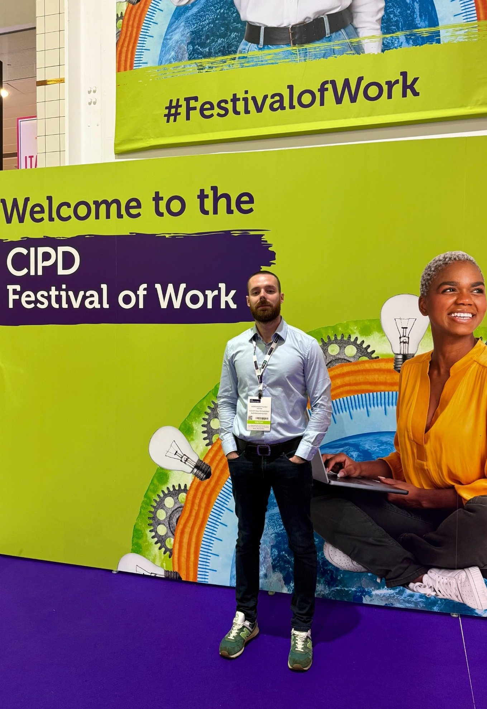
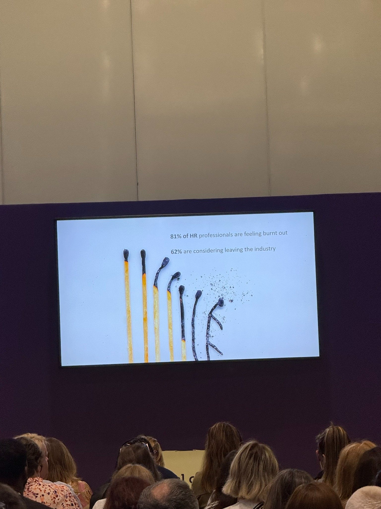
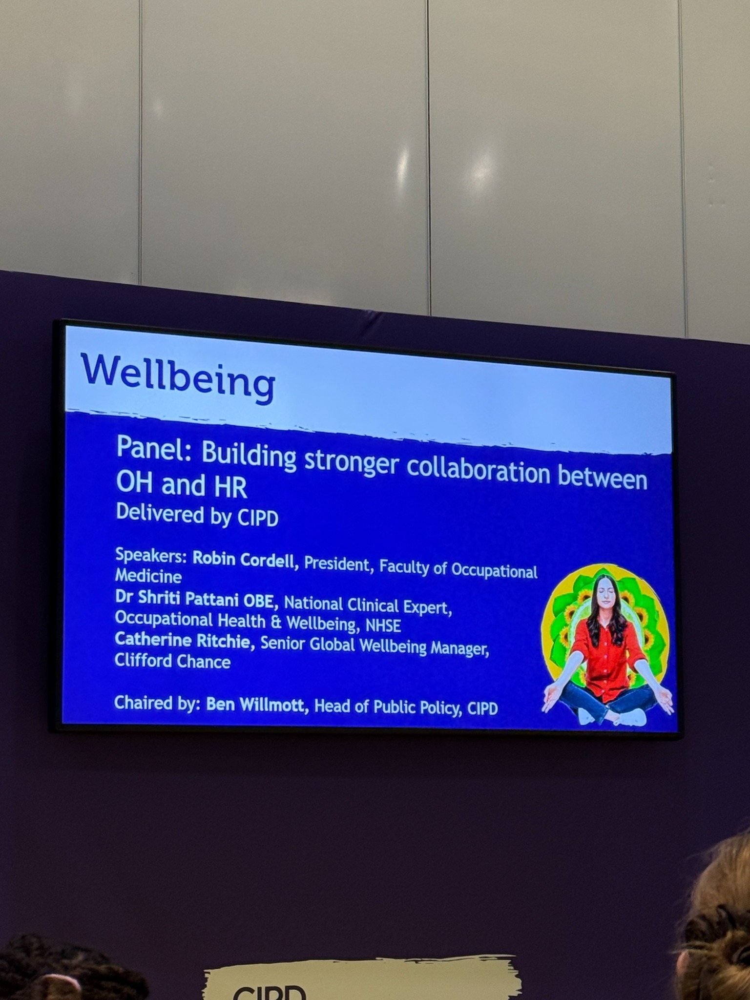
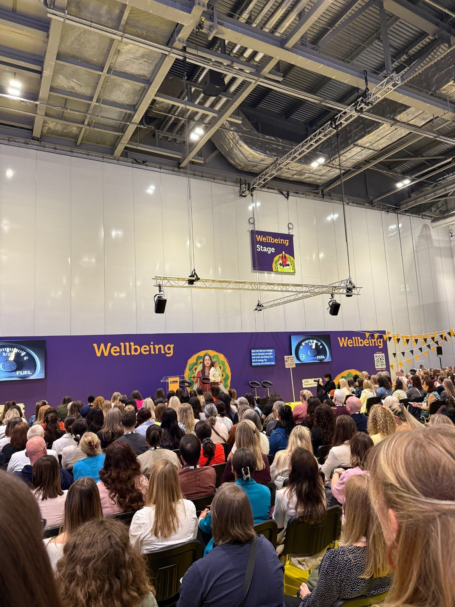

Autor: Aleksandar Plavsic

Prisustvo na CIPD Festival of Work 2026 u Londonu bilo je dobra prilika da se vidi u kom smeru se kreću razgovori o mentalnom zdravlju u profesionalnom okruženju. Wellbeing više nije sporedna HR tema, već sve važniji deo razgovora o učinku, liderstvu, zadržavanju ljudi, iskustvu zaposlenih i organizacionom riziku.
Iz perspektive organizacione psihologije, ova promena je važna. Burnout, stres i emocionalna iscrpljenost doživljavaju se individualno, ali retko nastaju samo zbog pojedinca. Oni se razvijaju unutar sistema: obima posla, jasnoće uloge, ponašanja lidera, komunikacionih normi, fleksibilnosti, priznanja, psihološke sigurnosti i realnih mogućnosti oporavka. Najzreliji razgovori na festivalu tretirali su wellbeing kao organizacionu sposobnost, a ne kao ličnu slabost.
Burnout ostaje jedan od glavnih izazova

Burnout se pojavljivao u mnogim sesijama. Posebno je važno to što nije bio predstavljen samo kao umor, već kao znak da je odnos između zahteva, resursa i oporavka postao neodrživ. Za HR i People timove, to stvara složen izazov. Potrebno je odgovoriti ljudski i sa razumevanjem, ali i strateški.
Prevencija burnouta zahteva više od podsećanja ljudi da prave pauze. Zahteva razgovore o obimu posla, dostupnosti, psihološkoj sigurnosti, pritisku donošenja odluka, timskoj kulturi i navikama liderstva. Organizacija psihologija tu može da pomogne jer individualni pritisak prevodi u obrasce rada koje je moguće razumeti, adresirati i menjati.
Dobrobit HR profesionalaca zaslužuje više pažnje
Jedna od najvažnijih tema bila je pritisak koji nose sami HR profesionalci. HR se često posmatra kao funkcija koja podržava sve ostale, ali ljudi koji rade taj posao takođe su izloženi emocionalnom radu, konfliktima, neizvesnosti, odgovornosti i stalnim promenama. Mogu biti uključeni u restrukturiranja, odnose sa zaposlenima, žalbe, wellbeing teme, eskalacije sa menadžerima i organizacione promene.
To može dovesti do toga da HR postane mesto gde se sliva organizacioni pritisak. Od HR profesionalaca se očekuje da budu strateški partneri biznisu, nosioci kulture, savetnici za procedure, emocionalna podrška i zagovornici wellbeing-a u isto vreme. Takav posao može biti smislen, ali i iscrpljujuć. Zato je važno podržati HR timove ne samo u tome kako podržavaju zaposlene, već i u prepoznavanju sopstvenih granica, stresa, compassion fatigue-a i potreba za oporavkom.
Saradnja između HR-a i Occupational Health-a postaje ključna

Sesija o saradnji između HR-a i Occupational Health-a pokazala je još jedan važan pravac. Mnoge organizacije i dalje odvojeno posmatraju wellbeing, odsustva, učinak, prilagođavanja na poslu i mentalno zdravlje. U praksi, te teme su povezane. Kada HR i Occupational Health dobro sarađuju, organizacija može da reaguje ranije, doslednije i sa boljim razumevanjem i osobe i radnog konteksta.
To je posebno važno u međunarodnim i distribuiranim okruženjima, gde menadžeri ne moraju uvek da vide prve znake opterećenja, kulturne norme oko stresa mogu da se razlikuju, a zaposleni rade kroz vremenske zone, jezike i lokalna očekivanja. Integrisaniji pristup omogućava prelazak sa reakcije na prevenciju.
Fleksibilnost, učinak i wellbeing se i dalje pregovaraju

Još jedna važna tenzija bila je odnos između fleksibilnosti, učinka i wellbeing-a. Fleksibilnost više nije samo benefit; ona utiče na pažnju, oporavak, obaveze van posla, saradnju i profesionalni identitet. Istovremeno, organizacije žele da zadrže standarde, povezanost i odgovornost.
Izazov nije birati između fleksibilnosti i učinka, već stvarati jasnije dogovore o tome kako se radi. To uključuje dostupnost, vreme odgovora, kulturu sastanaka, dubinski rad, očekivanja menadžera i psihološki uticaj stalne digitalne povezanosti.
Wellbeing je organizaciono pitanje
Najjača poruka koju nosim sa festivala jeste da se wellbeing sve više razume kao organizaciono pitanje. Individualna podrška je važna, ali ne može da nadoknadi nezdrave sisteme. Osoba može da razvije emocionalnu regulaciju, komunikacione veštine i navike oporavka, ali će i dalje biti u riziku ako okruženje nagrađuje prekomerno trošenje i ignoriše strukturni pritisak.
Za organizacije, to znači da wellbeing treba povezati sa razvojem liderstva, sposobnošću menadžera, iskustvom zaposlenih, organizacionim dizajnom i kulturom. HR i People timovima potreban je jezik koji je psihološki tačan, ali i poslovno relevantan.
Šta ovo znači za moj rad
Festival je dodatno potvrdio smer mog rada: psihološki informisana podrška za savremena profesionalna okruženja, sa fokusom na prevenciju burnouta, profesionalni pritisak, dobrobit lidera i međunarodne radne kulture. Koristan wellbeing rad nije generičan. Mora da govori jezikom HR-a, liderstva, remote saradnje, multikulturalnih timova i emocionalne kompleksnosti savremenih organizacija.
Pitanje nije samo kako pomoći ljudima da se osećaju bolje na poslu. Pitanje je kako pomoći organizacijama da stvore uslove u kojima ljudi mogu jasnije da razmišljaju, iskrenije komuniciraju, stvarno se oporavljaju i rade kvalitetno bez odvajanja od sopstvene dobrobiti.